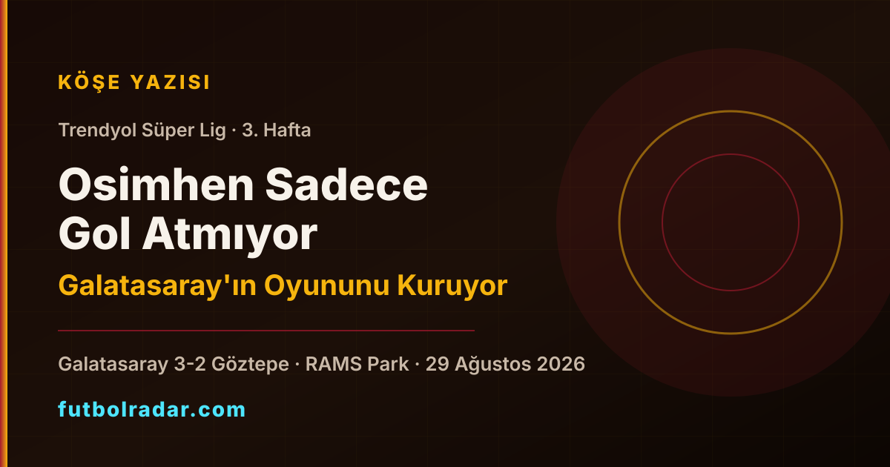

Osimhen Isn't Just Scoring — He Is Building Galatasaray's Game

The 3-2 win over Göztepe at RAMS Park looks like an ordinary three points on the scoreboard. In fact those 90 minutes contained Galatasaray's clearest title signal of the season so far, and that signal was called Victor Osimhen.
This is an opinion column. It reflects the writer's personal view and should not be confused with FutbolRadar's verified match data.
Some football matches are remembered not for their scorelines but for the impression they leave. Galatasaray against Göztepe at RAMS Park on the evening of 29 August was exactly that kind of match.
The yellow-and-reds went behind to Miroshi's goal on 16 minutes, went in level at 1-1, scored three times in the second half, had one goal ruled out for offside, gifted their opponents a second and played the last twenty minutes holding their breath. On paper, an up-and-down and even flawed ninety minutes.
But there is one image everybody who watched the match took away: the Göztepe defence, from the middle of the second half onwards, completely forgetting how to control Victor Osimhen. And here is the real point — Osimhen did not do that merely by scoring.
This column makes a claim from the concrete evidence of that match: this season Galatasaray have turned Osimhen from "the man who scores" into "the man who builds the game". And if that transformation holds, the title argument in this league closes far earlier than usual.
The scoreboard undersells it: Osimhen's match was not only about goals
Let us put the numbers down first. Osimhen scored from the penalty spot on 63 minutes, produced a superb backheeled assist for Gabriel Sara's goal on 55, won the penalty after a VAR review by going down in the box on 62, had a goal ruled out for offside on 68, and saw two shots in quick succession denied by brilliant Gugeshashvili saves on 51. Add to that his run in behind on 45 minutes that the goalkeeper had to come out for, and the chance he found in the six-yard box from Sara's cross on 7.
So, in a single match: a goal, an assist, a penalty won, a disallowed goal, at least three clear chances.
That is not simply the record of a centre-forward who has reached five goals in three matchweeks of the Süper Lig; it is the record of a player who has installed himself at the centre of a team's attacking production.
That is the difference. Last season's Osimhen was a finisher. This season's Osimhen is a creator.
First man in the press: why is nobody talking about Osimhen's defensive work?
There is a chronic fault in the way Turkish football discusses centre-forwards: nothing but the goal tally gets looked at. Yet at the heart of the pressure Galatasaray built in the second half against Göztepe was an Osimhen running without the ball.
What the Nigerian does is technically simple and physically merciless: closing off the passing angles of the opposing centre-backs and steering the game onto one side.
When Osimhen ran his curved press, Göztepe's back four had no safe route out to midfield; the ball was condemned either to the flank or to a long punt. The reason Torreira and Lemina won the ball so often and so high up in the second half was not their personal form but the man in front of them narrowing the pitch.
A centre-forward's press is what allows a team to push its defensive line up. Galatasaray's ability to pin Göztepe into their own half between the 55th and 70th minutes was made possible by exactly that permission. Osimhen was the team's biggest runner in those fifteen minutes, and those runs do not show up in a statistic — but their consequences show up on the scoreboard.
The art of wearing a defence down: a siege spread across ninety minutes
Osimhen's least-discussed quality is that he breaks an opposing defence not in a single moment but over time.
The Göztepe centre-backs Bokele and Ege largely won their physical duels with Osimhen in the first half. He could not get the contact he wanted on the chance in the six-yard box on 7 minutes, and found no clear goal in the opening 45. But there is a critical detail here: Osimhen never stopped in that first half. He ran into the space behind again and again, made contact with the centre-backs again and again, went into duel after duel.
For a centre-back, the most exhausting scenario is having to run backwards and win physical contests for ninety minutes against a quick forward. The run in behind on 45 minutes, the two consecutive shots on 51 — none of those produced a goal on their own, but they eroded the resistance of the Göztepe defence. And that resistance collapsed on 55 minutes.
You could put it like this: Osimhen issued the invoice in the first half and collected it in the second. Osimhen facing a tired defence is a problem nobody in the Süper Lig can solve. Having scored in 13 of his last 15 league matches is not a coincidence, it is the result of a method.
The centre-forward who opens space: why are Sara, Yunus and Barış Alper playing more freely?
The most instructive moment of the match was the 55th minute. Osimhen's backheeled assist was a lovely piece of skill, yes — but what really mattered was why that ball could reach Sara in open space at all.
When Osimhen moved into the penalty area, two Göztepe defenders attached themselves to him and the full-back tucked inside. That automatically created a gap right in front of the box — the area football calls zone 14. Sara moved into it, and instead of taking the shot the defence was braced for, Osimhen laid the ball back. The goal came not off Osimhen's foot but out of the gravity Osimhen creates.
The same mechanism applies to Yunus Akgün and Barış Alper Yılmaz. How often the wide players find themselves one-v-one is in direct proportion to how often the opposing full-backs are forced to tuck in. As long as Osimhen occupies two or three men in the box, Galatasaray's flanks have the most dangerous one-v-one space in the Süper Lig.
After Icardi left, the question was "who carries Galatasaray's attacking load?" The answer is clear: one man is not carrying the load, one man is distributing it. The difference between those two things is as large as the difference between first place and second.
Okan Buruk's brave call: Bardakcı off, Batrakov on
The tactical turning point was the change made at half-time.
With the score at 1-1, Okan Buruk took off his centre-back Abdülkerim Bardakcı and sent on the 21-year-old Aleksey Batrakov, signed from Lokomotiv Moscow for €25m. A manager removing a defender and adding an attacker while the game is level is not a courage often seen in Türkiye.
That move carries two meanings. The first is Buruk's faith in Osimhen: if you know one player can occupy three defenders in the penalty area, you can afford to play a man short behind you. The second is that Buruk no longer regards a draw as an outcome. For a Galatasaray side that drew 2-2 at home with Çorum FK on the opening weekend, showing this reflex as early as matchweek three is valuable.
The result speaks for itself: nine minutes after the change Galatasaray were ahead, and eighteen minutes after it the score was 3-1. Batrakov raising the tempo on his debut also shows that Buruk's rotation options have widened.
The other side of the coin: conceding twice is a warning
A columnist's job is not only to applaud. There were things in this match that should trouble Galatasaray.
Uğurcan Çakır falling ill before kick-off and Jankat Yılmaz starting disturbed the defence's usual chemistry. The goal conceded on 16 minutes was an organisational error; the second, conceded on 65 with the score at 3-1, was a psychological loosening. A team chasing a title does not offer two goals of resistance to an opponent in the lower reaches of the table.
The price of the Batrakov move showed up here too: the advantage gained in attack came with a concession at the back. Can Buruk strike this balance with the same courage in European ties and in derbies? That is the real question of the season.
One more thing should be added, though: Galatasaray are unbeaten in their last 36 home league matches. The last defeat at RAMS Park was on 19 May 2024, against Fenerbahçe. That run is the signature of a team that has learned how to take three points on a bad day — and that is exactly how titles are won.
Title signals: Osimhen is warming up while the rivals stumble
Look at the table. Galatasaray are in the fight at the top with 7 points from three matchweeks. Fenerbahçe have managed only 3 in the same period. Trabzonspor have 4, and Beşiktaş have stumbled into the season. So while the league's biggest rivals are still searching for their identities, Galatasaray are collecting points and building their football at the same time.
On Osimhen's side the picture is more striking still: now on 64 competitive goals, the Nigerian is within range of Hagi (72) and Icardi (77) on the club's list of highest-scoring foreign players. He has 5 goals in the season's third matchweek and has scored in 13 of his last 15 league matches.
A centre-forward holding those numbers at the start of a season is a forecast of what he can do across it. And Galatasaray's greatest piece of fortune is that Osimhen is no longer only producing goals — he has become the axis of the team's attacking organisation.
Conclusion: this team is not playing to win the title, it is playing to manage it
The Göztepe match was not flawless. Two goals conceded, one ruled out, a mediocre first half, a hesitant defence.
But what should be taken from a match is not its flaws, it is its tendencies. And three tendencies were very clear at RAMS Park that evening:
First, Galatasaray's attacking football no longer rests on individual talent but on a system built around Osimhen. That system makes Sara, Yunus and Barış Alper better players.
Second, Okan Buruk is ready to take risks to win. A manager who removes a centre-back at half-time and brings on a number ten is a manager who trusts his squad.
Third, Osimhen sees this as the season he writes himself into Süper Lig history. He is the sole heir to the throne Icardi left empty, and that motivation transfers straight onto the pitch.
The season is long. European fatigue, injuries, derby weeks and the inevitable dips are all still to come. But a team's title quality is read from the direction of the football it plays in August.
Galatasaray's direction is clear: upwards. And the compass pointing that way is called Victor Osimhen.